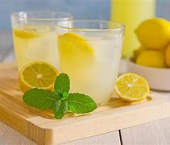

limonada
la limonada es una vevida muy refrescante. la eleji porque es mi favorita

ingredientes
limon
agua
azucar
hielo
pasos
esprimir los limones
hechar agua al extracto de los limones
le ponemos azucar
lo mezclamos todo
y le ponemos hielo
<iframe width="560" height="315" src="https://www.youtube.com/embe d/dxewqac2qDE?si=IW5RUFpI1xgDCtaK" title="YouTube video player" frameb order="0" allow="accelerometer; autoplay; clipboard-write; encrypted-media ; gyroscope; picture-in-picture; web-share" referrerpolicy="strict-origin -when-cross-origin" allowfullscreen>
Volver a Inicio